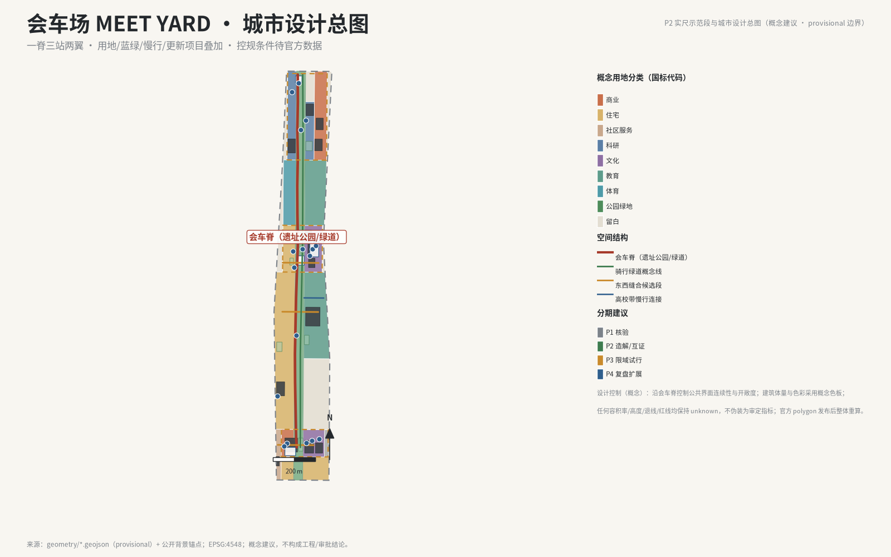
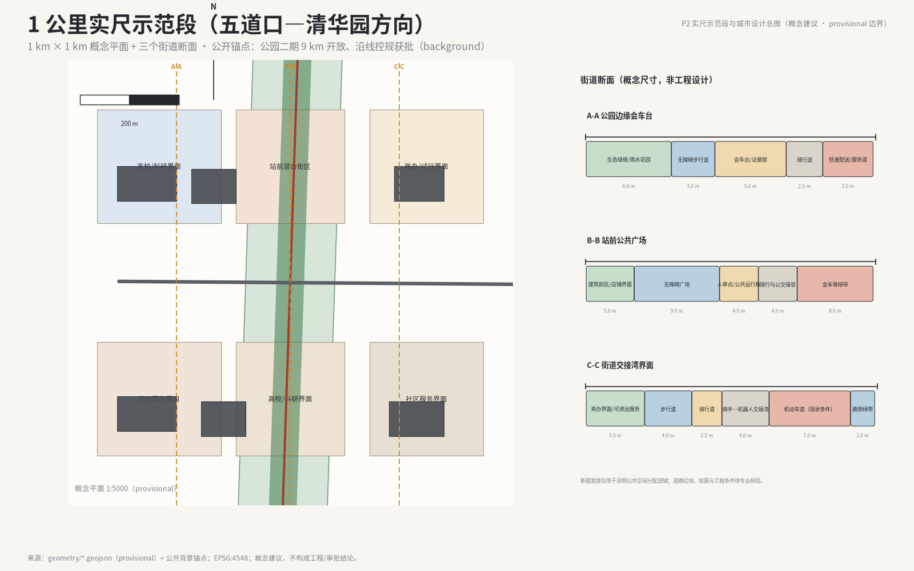
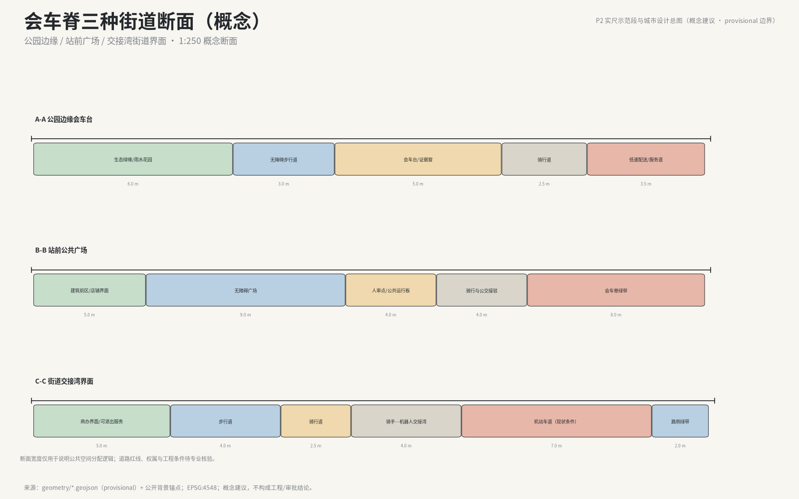

MEET YARD — A Public Meeting Yard for Human–AI Verification
English companion of the Chinese formal proposal (proposal.md is authoritative). MEET YARD organizes the Centennial Jing-Zhang AI Innovation Belt as a public meeting yard: a spine, three stations, two wings, and the seven-step Meet Yard Protocol (apply—disclose—cross-verify—human-review—pilot—roll back—archive) that lets AI meet people before it moves the city. All spatial content is conceptual advice on provisional boundaries.
MEET YARD — English Companion
This is the English companion of the Chinese formal proposal. The Chinese original (
proposal.md) is authoritative for all claims, figures and machine references. All spatial, engineering, investment and operation statements are conceptual advice pending professional deepening and official review; boundaries are provisional (official_boundary=false) until official polygons are published.
One-Page Review Summary
| Reviewer question | Answer | Verifiable artifact |
|---|---|---|
| Core proposition | Let AI meet people before it moves the city. Any AI service entering public space must complete the seven-step Meet Yard Protocol; pilots expire by default and renewal requires public evidence | 8-value status_code state machine (§06.1); green/amber/red risk levels; 7-role permission matrix |
| Can third parties verify the mechanism? | Yes. Protocol fields, state enums and log fields are machine-readable; 31 required outputs verified, 40 changelog dispositions resolved, naming stress tests logged | compliance_matrix.json, changelog.md, visual/assets/data/claim_register.json, visual/assets/data/meet-protocol.schema.json + 14-check deterministic drill |
| What does it do spatially? | One spine (9.6–9.8 km), three stations (Make / Verify / Trial), two wings, meeting decks at multiple points; 9 GeoJSON layers, 25 EPSG:4548-recomputed metrics | geometry/*.geojson, metrics.json, visual/assets/data/recompute-log.json |
| What backs the three service baselines? | Accessible quiet bays and non-digital entrances (C05/C07), human fallback and no anonymous tracking, stop and rollback as protocol steps | Component library C01–C08; scenario cards S01–S14; threshold drafts §06.3.2 |
| Who benefits? | Any resident may challenge a service reading affecting them (public review and inquiry window); riders, older adults, low-digital-literacy personas bound to components | Personas P01–P07; components PS-C04/05/06; metric OPS-WIN-01 |
| What can start soon? | Phase 1 is verification only (~400 ha), no construction; light facilities first; S03 has a 100-day delivery contract (4 gates, no default extension); every scenario starts with apply—disclose | Phasing §10.3; §06.3.4 contract; visual/assets/data/first-100-days.json |
| What is deliberately withheld? | FAR, height, density, setbacks, demolition conclusions, engineering alignments, investment estimates — kept unknown or conceptual | unknown metrics; wording gate §12.3 |
| How trustworthy is the data? | All geometry is provisional; full recalculation on official polygon publication, not patch-by-patch; case sources CS01–CS08 registered with verified URLs | §12.1; sources.json; visual/assets/data/case-source-ledger.json |
Sources and Data Discipline
- Primary sources: official announcement of the open call (Beijing Municipal Commission of Planning and Natural Resources, Haidian Branch), the agent taskbook, and the repository site package; usage boundaries per
data/source_registry.json(formal / background / provisional / no). - Provisional geometry discipline:
official_boundary=false,geometry_role=provisional_constraint,boundary_precision=provisional_rough; not an official redline; full recalculation (layers, metrics, figures, HTML, PDF) after official polygons are published — never patch a single file. - Wording gate (§12.3): statements like "planned as", "will be built", "approved" are replaced by "conceptual advice", "to be studied", "for professional deepening".
Three-Scale Working Framework
| Scale | Design question | Answer | Data anchor | Exit condition |
|---|---|---|---|---|
| Coordinated research (~43.6 km²) | How to organize the AI industry ecology and future urban form | MEET YARD proposition: naming system, ecology map, three-station/two-wing loop | compliance_matrix.json; eight-element ecology map | Scenarios without public value do not enter overall design |
| Overall design (~11.4 km²) | How to draw industry space, renewal, mobility and townscape | One-spine-three-stations-two-wings structure; nine GeoJSON layers; renewal projects and phasing | site_boundary.geojson#SITE-001; SCOPE-OVERALL-01 | Actions without sources or maintenance return to verification |
| Key areas (~368.4 ha) | How deep to design the three districts | Three station mini-schemes + three-station contract tables + meeting-deck component network | key_areas.geojson#PROV-KEY-001/002/003; SCOPE-KEY-01 | Services not past step-4 human review cannot claim piloting |
Urban Design Boards (P2)



The master plan overlays land use, blue-green, mobility and renewal structure; the 1-km demonstrator around Wudaokou–Qinghuayuan organizes a park-edge meeting deck, a station square and a street handover bay. All dimensions and boundaries are conceptual advice on provisional geometry, not engineering or approval conclusions.
Concept and Naming (agent.1)
- Unique concept: design the belt as a "meeting yard" — humans, agents, knowledge and industry meet on one public spine by appointment, cross-verify, pilot at low risk, and write results back into a reusable public archive. Tagline: "让智能先会人，再进城 / AI meets people before it moves the city."
- A space or activity qualifies as a "meeting" only with: two or more affected parties, limited public resources, appointment window, shared context, human release point, stop conditions, manual alternative, and result archiving. Railway vocabulary alone is not a meeting mechanism (mechanism judgement log:
双路签and状态灯带rejected as misleading). - Naming hierarchy: MEET YARD (brand) → Meeting Spine → Make/Verify/Trial stations (alongside official names) → Meeting Deck (nodes) → Meet Yard Protocol (governance) → Meet Yard Sessions (rhythm) → Meet Yard Archive (public knowledge).
- Logo concept: two open trajectories that approach but do not collide, with a central "human review square" — no trains, rails, switchbacks, chips or infinity symbols; recognition required at 16px/24px, signage, A0 sheets and black-and-white print.
Competitive Map Update (P1)
The 2026-08-16 snapshot (visual/assets/data/competitive-map-20260816.json, COMP-20260816-507) shows a same-origin concept already exists: PASSING LOOP (wnz27). MEET YARD no longer claims "no equivalent concept"; it differentiates through four verifiable objects: (1) the 8-value protocol state machine and 14-check deterministic drill; (2) spatial component ID binding (C01–C08 ↔ scenario IDs ↔ metrics); (3) measurement protocols for the six unknown metrics; and (4) the S03 first-100-days delivery contract. Known gaps are registered honestly: drawing depth vs Intelligence Commons V6, bilingual completeness vs Rails AI Belt v1.7, and cultural/policy anchor depth vs JZ-1909.
Three Positioning and Five Functions (agent.1/agent.2)
Mapping (positioning/function → carrier → acceptance meaning): Heritage Culture Belt → spine, evidence windows, archive shelves (heritage is not scenery; sources, rights and disputes visible); AI Living Experience Belt → scenario cards S01–S14, meeting decks, accessible quiet bays, non-digital entrances (experience can be refused, appealed, reverted to human/non-AI); AI Integration Belt → three stations, two wings, industrial validation V01–V04; Full-Stack Self-Reliant AI → Zhongzhiyuan Make Station (model checkups, failure boundary tests); World-Class AI Ecology → AI Origin Community Verify Station + Zhongguancun service wing + eight-element ecology; AI+ Scenario Enablement → Xiaoyuehe wing + meeting decks + threshold drafts; Intelligent AI City → spine, component library, living validation nodes; AI Governance Discourse → seven-step protocol, public operations board, archive, global assembly.
Key Area Detailed Design (agent.3/4)
Three-station contract summary (8 fields; roles and indicators conceptual or pending verification):
| Contract field | Make Station (Zhongzhiyuan) | Verify Station (AI Origin Community) | Trial Station (Dazhongsi) |
|---|---|---|---|
| Fixed input | Problems, models, compute, test applications | Candidate solutions, public issues, inquiries | Verified capabilities and products |
| Core action | Make—check—review: model checkups, failure boundaries | Public translation—learning—resident feedback | Street-trial—validation hall—enterprise test |
| Accountable roles (TBC) | Independent test reviewer + on-site safety | Public-service duty + community liaison | On-site safety + commercial operator |
| Minimum components | C02 deck, C04 human-review point, C03 evidence window, C07 rollback marker | C01 general deck, C04 human-review point, C05 quiet bay, C08 archive shelf | C02 deck, C04 human-review point, C06 handover bay, C07 marker, C08 shelf |
| Fixed output | Testable solutions with version, evidence and limits | Verified public knowledge (archive) | Public trial, incident and rollback records |
| Minimum acceptance metrics | AREA-ZZY-01; reproducibility, failure coverage (GOV-OBS, formula pending) | AREA-ORIGIN-01; dispute closure, referral rates (INCLUSION-SERVICE, pending) | AREA-DZS-01; human takeover success, exit success, anomaly closure time (OPS-WIN, pending) |
| Rollback/exit | Pause and restore manual process; failed models blocked from public trial | No release while disputes unclosed; records public | Stop trigger restores manual service; unresolved incidents block renewal |
| Hard gate | No deployment or permanent certification claims; no unlicensed data escalation | No substitution of statutory approval; no forced automation | No claims of approved scaled operation, investment or tenancy |
Meeting deck siting rules (v1.4): (1) at intersections of the spine with cross streets/seam lines; (2) adjacent to station squares PS-PLAZA-001/002/003; (3) co-sited with handover bays C06; (4) pedestrian-first low-speed domains at crossing nodes. Grading: level 1 = general deck C01 (1); level 2 = meeting decks C02 (3, PS-C02-001/002/003, metric NODE-SCENARIO-01); level 3 = waiting/handover nodes C06 (2).
Seven-Step Meet Yard Protocol (agent.3)
- Steps: apply—disclose—cross-verify—human-review—pilot—roll back—archive; 8-value
status_code(applying / disclosed / pending cross-verification / human-reviewed / piloting / paused / rolled back / archived) plusrecord_status(draft|verified|blocked; draft ⇒ status_code null). - Risk levels: green/amber/red; escalation rule — sensitive data, vulnerable groups, physical device motion, public-service eligibility, legal/medical/safety consequences or hard-to-reverse effects start at amber minimum; uncertain cases escalate one level or exit rather than downgrade the description.
- Five non-negotiable mechanisms: appointment, human review (non-outsourceable), rollback (pause, manual process, who notifies, where logs live), co-attribution (human/agent/data/code/reviewer), rhythm (pilots end into review; long-running services re-reviewed on fixed cycles).
- Role matrix (7 roles × can/cannot/must-record/absent-handling) with backup and handover discipline: no verbal sign-off without a pre-authorized backup — pause or revert to manual instead.
- Public operations board:
record_status+status_code, responsible role type, risk level, data-source classes, last review time, anomalies and rollbacks; privacy-safe summaries only; state index is a static/offline snapshot, text and status codes over colors. - Machine artifacts (v1.3):
meet-protocol.schema.json+ deterministic drillcheck_meet_protocol.js— 14 checks all pass (transition legality, reachability, terminal state, PAUSED recovery rule, fixtures), evidence inmeet-protocol-drill.json; metrics GOV-OBS-04/05/06 (7 steps / 8 codes / 14-14 drill).
Scenario Cards, Thresholds and First 100-Day Contract (agent.3)
- S01–S14 cards cover AI+transport, services, consumption, education, law and daily life (10+ cards, 3+ industrial validation as required), each with responsibility, human review, stop triggers, rollback, metrics and privacy boundary;
record_status=draftinitially. - Threshold drafts (v1.2, §06.3.2): success/stop thresholds and manual-fallback baselines per card — e.g., S07 model checkup: reproducibility 100%, failure coverage ≥80%, stop on data overreach or non-reproducibility; S13 low-speed shuttle sandbox (red, human-led only): emergency takeover 100%, ≤10 s; S03 handover bay: zero pedestrian conflict, average wait ≤2 min, stop on any conflict or 3 valid complaints. All thresholds are drafts for pilot calibration, not commitments; calibration principle: baseline measurement before pilot, stop triggers not self-resettable, fallback keeps services running, changes re-enter disclosure—cross-verification.
- First 100-day contract (P1, §06.3.4): S03 rider–robot handover bay (
visual/assets/data/first-100-days.json, MY-100D-S03-001) — D1 site/permission research (D0–15), D2 baseline and labor/accessibility review (D16–35), D3 three deterministic tabletop drills (D36–70), D4 either a ≤14-day limited pilot or a public no-go archive (D71–100). The contract expires by default; no-go is a legitimate outcome.
Components, Landmarks, Culture, Operations (agent.4/5/6)
- Component library C01–C08 (18 spatial nodes in
public_space.geojson): general deck, meeting deck, evidence window, human-review point, accessible quiet bay, rider–robot handover bay, rollback marker/manual entrance, achievement/failure archive shelf. - Landmarks L01–L04: general deck, Centennial Question Platform, Human–AI Cross-Verification Platform, Open Results Gallery — honor display with status distinction, no personal statues.
- Culture: four methods translating Zhan Tianyou's spirit (local problems, innovation under constraints, system-verified design, autonomy as public capability); the "yield" sub-line (Qinglongqiao passing-loop history) stays
unverifieduntil cleared sources exist. A machine-readable timeline and engineering-method→protocol mapping is invisual/assets/data/cultural-narrative-ledger.json; the narrative explicitly does not reuse the switchback/train visual motif, and openly admits that first-hand historical sources and heritage-control data remain a weakness versus specialist heritage schemes. - Brand visual spec (v1.6): identification hierarchy (base/application/event/authorization), logo variants (dual-color, mono, dark, 24px), color tokens (ink-black, paper-white, jz-brick, signal-amber, civic-blue, eco-green) with semantic use and no color-only encoding.
- Operations: four rhythms (daily/three shifts, weekly/open meeting day, quarterly/cross-domain week, annual/MEET YARD ASSEMBLY) with renewal-or-exit rules; developer community state machine (visitor→participant→tester→maintainer→partner) with explicit reverse transitions and no zombie partner state.
Renewal Projects, Policy, Phasing (agent.6)
- Renewal project list (7 items, four categories) with type, location, dependencies, responsible role types (TBC) and evidence references; no implementation promises without ownership, funding and approval paths.
- Phasing: Phase 1 verification only (~400 ha, 0–1 yr) → Phase 2 Make/Verify first (~233.7 ha, 1–3 yr) → Phase 3 limited trials (~288.7 ha, 2–4 yr) → Phase 4 review and expansion (~218.9 ha, from year 4); each phase has accountable role types (TBC), suggested windows, acceptance and exit triggers; expansion only through the cycle, otherwise hold or roll back.
- Policy and status anchors (v1.5 + P2, background): corridor control plan approved (Aug 2026 press), Lanjinglija international exchange center (BJD 2026-08-03), AI Origin Community "from 0 to 1" (BJD), Haidian 3 km² AI district (June 2026), Haidian Urban Renewal Guideline 2025 issued, Jing-Zhang Railway Heritage Park phase 2 fully open (9 km, 2026-08-06). P2 adds five repository-seed anchors pending content verification: park phase 1 completion (≈2.5 km / 16.8 ha, 2023), phase 2 plan (≈9 km, 2024), park registry entry (2025), first four AI innovation blocks including Haidian Origin Community (Jan 2026), and "Origin Boom" series (Apr 2026). All anchors remain background narrative only — never upgraded to spatial control or industrial statistics.
Indicator System and Compliance
- 25 metrics across the 15 fixed groups; known metrics recomputed in EPSG:4548 (site 11,412,825 m²; green union 2,176,274.715 m² / 19.07%; land-use coverage 1.0; meeting decks 3; protocol drill 14/14); the six unknown metrics (GOV-OBS-01/02/03, OPS-WIN-01/02, INCLUSION-SERVICE-01) now have complete measurement protocols (
visual/assets/data/measurement-protocol.json): instrument, sampling frequency, responsible roles, data fields, baseline method and acceptance gates. Values stay unknown/null — protocols are defined, baselines are pending, no target values are fabricated. - Compliance: 31 required outputs all
verified; 40 changelog dispositions resolved; standard matrix 6 mandatory standards; design depth matrix 15 items complete.
Risk, Copyright, Compliance
- Provisional disclosure and full-recalculation commitment (§12.1); source and copyright discipline (§12.2); wording gate (§12.3); responsibility statement (§12.4): AI-generated content is the responsibility of the human submitters; AI systems do not bear legal or governance responsibility; high-risk matters are human-led.
- Public criticism and response ledger (§12.5, v1.3): Issue #846 (provisional boundary vs OSM park, ~412.5 m) registered as adverse evidence; #1029 (PROV-KEY-003 centroid offset) registered pending official polygons; #1061 ("no exhibition matches") adopted as quality reminder — step-4 human review is the design core and wording gates apply; #1071 partially adopted — boundary statements in §01/§12.
References
Complete reference list with grades, URLs and retrieval dates in sources.json (official announcement, taskbook, site package, source registry, processed fact pack, provisional boundary sources, 8 global case sources with verified URLs, 6 policy/status anchors); verification details in visual/assets/data/case-source-ledger.json. Global cases (PDD, Kalasatama, Barcelona/Decidim, Marineterrein, Seoul AI Hub, Mila, Turing, Station F) are mechanism references only; quantitative effects and current status remain pending professional review.